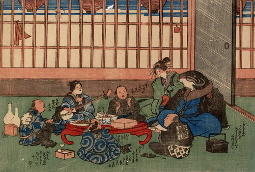

鯰の大尽が中心となり、芸者を招いて職人たちと宴に興じている。鯰は恰幅よく藍の着物に羽織姿である。
出典：親書誌：U426_nichibunken_0206：〔鯰と職人；ナマズトショクニン〕／日付：2010／資源識別子：U426_nichibunken_0206_0001_0000
Copyright (c)2010- International Research Center for Japanese Studies, Kyoto, Japan. All rights reserved.